CLAUDE’S PICK
Jina Reader: 웹 HTML을 AI용 마크다운으로 변환


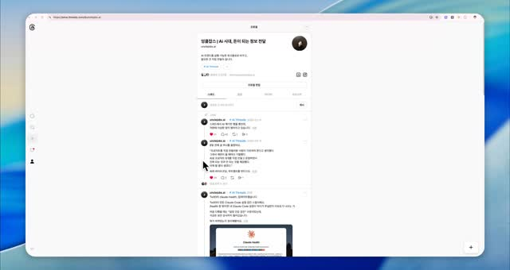
AI에게 웹 URL을 그대로 전달하면 HTML 태그, 광고, 네비게이션 등의 노이즈가 혼재되어 정보 추출 정확도가 떨어진다. Jina AI의 Reader API는 URL 앞에 r.jina.ai/를 붙이는 것만으로 해당 페이지의 본문을 깔끔한 마크다운으로 변환해 반환한다. Puppeteer 기반으로 SPA와 PDF도 처리하며, RAG 파이프라인과 AI 에이전트의 전처리 단계로 활용된다.
핵심 포인트: 핵심 기여: URL 접두어 r.jina.ai/ 한 줄 추가로 광고·스크립트 없는 순수 본문 마크다운을 반환하며, SPA·PDF 처리 및 이미지 캡셔닝을 지원해 AI 에이전트와 RAG 파이프라인의 전처리를 단순화한다.
기타 (Others)
LiteParse: 복잡한 클라우드 없이 고속 PDF 파싱 도구
복잡한 클라우드 기반 문서 파싱 솔루션에 대한 의존성과 설정 복잡성 문제를 해결하기 위해 run-llama가 경량 오픈소스 파서 LiteParse를 공개했다. 독립형 고속 PDF 구문 분석 도구로 클라우드 없이 로컬 실행이 가능하며, 클라우드 기반 LlamaParse와 함께 사용해 상황에 맞는 파싱 방식을 선택적으로 활용할 수 있다.
핵심 포인트: 핵심 기여: LiteParse는 클라우드 의존 없이 로컬에서 실행되는 독립형 오픈소스 PDF 파서로, LlamaParse의 클라우드 고급 파싱 기능과 상호 보완적으로 동작하여 문서 파싱 환경의 유연성을 제공한다.
🔗 linkedin.com/posts/inai-wiki_run-llama-li…
기타 (Others)
sklearn-diagnose: ML 모델 오류 자동 진단 도구
scikit-learn 모델의 예측 실패 원인을 진단하기 어렵다는 문제를 해결하는 LLM 기반 진단 레이어. sklearn-diagnose는 세 개의 LangChain 에이전트가 Hypothesis-Recommendation-Summary 파이프라인으로 7가지 실패 모드를 자동 탐지하고, 각 오류에 대한 실행 가능한 수정 방안을 생성한다. 다중 공급자 LLM을 지원해 진단 단계별로 최적 모델을 선택할 수 있다.
핵심 포인트: 핵심 기여: 3개의 특화 LangChain 에이전트가 7가지 실패 모드를 탐지하는 Hypothesis-Recommendation-Summary 진단 파이프라인 구성, 다중 공급자 LLM 지원으로 단계별 최적 모델 라우팅 실현.
🔗 linkedin.com/posts/image-title-share-7441…
기타 (Others)
AI & RESEARCH
LeWorldModel: 픽셀에서 학습하는 초경량 세계 모델
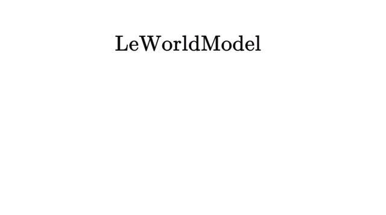
JEPA 구조는 훈련 불안정성과 복잡한 다중 손실 함수, 사전 학습된 인코더 의존성으로 인해 연구용 데모에 머물러 왔다. Lucas Maes 연구진은 가우시안 정규화 기법 하나만으로 픽셀에서 직접 안정적 학습이 가능한 LeWorldModel을 공개했다. 15M 파라미터의 초경량 구조로 단일 GPU에서 수 시간 내 학습되며, 기존 파운데이션 모델 기반 세계 모델 대비 최대 48배 빠른 계획 수립 속도를 달성한다.
핵심 포인트: 핵심 성과: 파라미터 수 15M으로 단일 GPU에서 학습 가능하며, DINO-WM 대비 48배 빠른 계획 수립 속도를 실현했고, 조정 가능한 손실 하이퍼파라미터를 기존 6개에서 1개로 대폭 감소시켰다.
기타 (Others)
RAG — 단순 검색에서 멀티 에이전트 문제 해결로 진화
RAG, Agentic RAG, Multi-Agent RAG는 유행어가 아니라 지능형 시스템을 구축하는 세 가지 근본적으로 다른 방식이다. 단순 RAG가 컨텍스트 검색에 집중하는 반면, Agentic RAG는 메모리와 계획으로 자율 문제 해결을 가능하게 하고, Multi-Agent RAG는 복수의 전문 에이전트가 분산 검색과 독립 추론으로 협업하여 복잡한 실세계 문제를 처리한다.
핵심 포인트: 핵심 기여: RAG(단순 검색) → Agentic RAG(메모리+계획+도구) → Multi-Agent RAG(다중 에이전트 협업)의 세 단계 아키텍처를 시각적으로 비교하며, AI 시스템이 질문 답변에서 문제 해결로 진화하는 패러다임 전환을 명확히 제시한다.
🔗 meta.ai/
기타 (Others)
RAG: 검색 성능을 높이는 5가지 문서 청킹 전략
RAG 파이프라인에서 임베딩 전 문서를 어떻게 분할하느냐는 검색 정확도와 응답 품질에 직접 영향을 미친다. dailydoseofds는 5가지 청킹 전략을 시각적으로 비교한다. 고정 크기 분할은 간단하지만 문맥을 끊고, 의미 기반 청킹은 코사인 유사도로 의미 단위를 묶는다. 재귀적·구조 기반 청킹은 문서 계층을 활용하며, LLM 기반 청킹은 가장 높은 의미 정확도를 제공한다.
핵심 포인트: 핵심 기여: 고정 크기·의미 기반·재귀적·문서 구조 기반·LLM 기반 5가지 청킹 전략을 시각화 비교하며, LLM 기반이 의미 정확도는 가장 높지만 연산 비용이 가장 크다는 트레이드오프를 명시한다.
🔗 meta.ai/
기타 (Others)
RAG 아키텍처 8종: AI 엔지니어용 유형별 활용 가이드
RAG 시스템 설계 시 어떤 아키텍처가 어떤 상황에 적합한지 판단하기 어렵다는 문제가 있다. dailydoseofds는 Naive RAG부터 Agentic RAG까지 8가지 아키텍처를 용도별로 분류하여, 단순 사실 조회, 멀티모달 검색, 쿼리-문서 의미 불일치 해결, 정보 정확도 검증, 관계형 추론, 비정형-정형 데이터 결합, 복잡 쿼리 분해, 다중 소스 오케스트레이션 등 각 유형별 최적 사용 시나리오를 구체적으로 제시한다.
핵심 포인트: 핵심 기여: Naive RAG, HyDE, Corrective RAG, Graph RAG, Hybrid RAG, Adaptive RAG, Agentic RAG 등 8가지 아키텍처를 용도 기준으로 체계화하여, 단순 의미 검색부터 ReAct 기반 다단계 추론 및 외부 API 활용이 필요한 복잡한 워크플로우까지 상황별 최적 패턴 선택 기준을 제공한다.
🔗 meta.ai/
기타 (Others)
PlayerZero: 개발 맥락 통합으로 버그 원인 자동 추적
개발 현장에서 버그 원인 파악은 슬랙 대화, PR 리뷰, CI/CD 기록, 지원 티켓 등 분산된 맥락을 수동으로 통합해야 하는 난제였다. PlayerZero는 이 맥락들을 하나로 연결해 에러 근본 원인을 수 분 내에 추적하며, 배포 전 버그의 64%를 사전 탐지한다. 진단을 반복할수록 조직의 판단 과정을 스스로 학습해 정확도가 점진적으로 개선되는 자기강화 구조를 갖췄다.
핵심 포인트: 핵심 성과: 배포 전 버그 탐지율 64% 달성, 300명 QA 팀이 수 주에 걸쳐 찾는 문제를 수 분 내에 예측하는 속도 실현.
🔗 threads.com/@choi.openai/post/DWQvc4zDwlg…
기타 (Others)
Hyperagents: 자기 개선 방식까지 진화시키는 AI
기존의 자기 개선 AI 시스템은 작업 에이전트와 메타 에이전트가 분리되어, 메타 에이전트가 인간이 설계한 고정 규칙에만 의존하는 구조적 한계를 가졌다. Meta 연구진이 2026년 3월 발표한 Hyperagents 논문은 두 역할을 단일 시스템으로 통합해 메타인지적 자기 수정을 구현하며, 한 분야에서 학습한 진화 방식을 다른 분야로 전이시켜 코딩, 논문 심사, 로봇 제어 등 모든 계산 가능한 작업에서 범용적으로 진화할 수 있음을 보였다.
핵심 포인트: 핵심 기여: Darwin Gödel Machine의 고정된 지시 생성 방식을 개선한 DGM-H를 통해, 메타 에이전트의 코드 자체를 AI가 스스로 수정하는 메타인지적 자기 수정을 달성하고 특정 도메인에 종속되지 않는 범용 자기 진화 능력을 확보했다.
논문 (Papers)
OpenGauss: 자연어 수학 문제를 정형 코드로 자동 변환
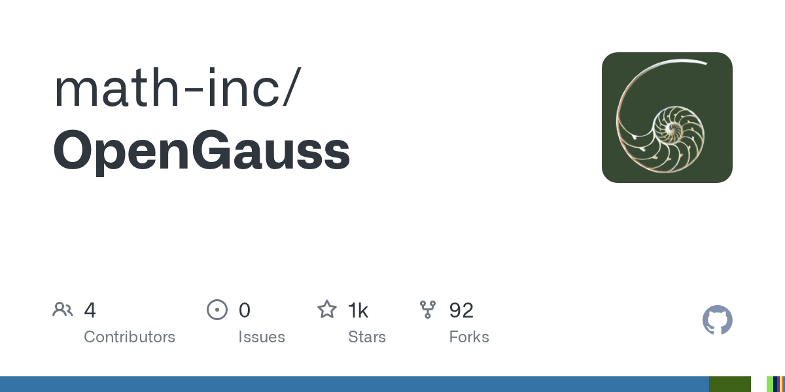
자연어로 표현된 수학 문제를 정확한 형식 코드로 변환하는 자동 정형화 작업은 AI 연구의 핵심 병목이다. Math, Inc.가 DARPA 행사에서 공개한 오픈소스 에이전트 OpenGauss는 이 과정을 기존 대안보다 빠르고 저렴하게 처리하며, 4시간 제한 환경에서 무제한 시간을 허용받은 HarmonicMath의 Aristotle 에이전트를 능가하는 성능을 기록했다.
핵심 포인트: 핵심 성과: 4시간 제한 조건에서 무제한 시간을 부여받은 최고 수준 경쟁 에이전트 Aristotle을 능가했으며, 기존 대안 대비 속도·비용 모두 우위를 보이는 최초의 오픈소스 수학 자동 정형화 에이전트다.
🔗 github.com/math-inc/OpenGauss
GitHub
ASMR: 벡터 DB 없이 99% 달성한 에이전트 기억 시스템
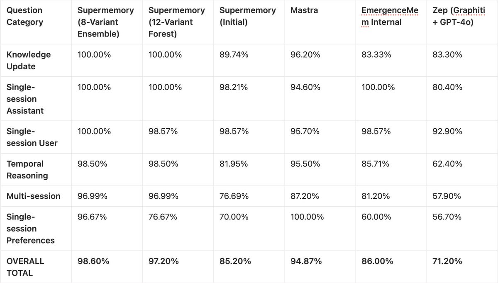
기존 RAG 기반 에이전트 기억 시스템은 벡터 계산에 의존하며 정보의 시간적 최신성을 추론하지 못하는 한계가 있다. Supermemory의 ASMR은 벡터 DB를 완전히 제거하고 관찰자·검색 에이전트를 병렬 배치해 세션을 직접 읽으며 맥락과 시간 흐름을 능동적으로 추론한다. 외부 DB 없이 인메모리로 작동하여 소형 디바이스에도 이식 가능하다.
핵심 포인트: 핵심 성과: LongMemEval 벤치마크에서 99% 정확도를 달성했으며, 벡터 DB 없이 완전 인메모리로 작동해 로봇·소형 디바이스에도 이식 가능하고 코드는 오픈소스로 공개 예정이다.
🔗 threads.com/@choi.openai/post/DWM3YGCjuQX…
기타 (Others)
Claude Code: 1M 컨텍스트 축소로 성능 회복 확인
Claude Code의 1M 컨텍스트 윈도우 활성화 시 모델이 사용자 지침을 무시하고 비정상 동작을 반복하는 문제가 보고됐다. OCR 처리 시 각 페이지에 API를 30회 중복 호출하거나, 처리 완료 후 데이터 저장 없이 pod를 삭제하는 오류가 발생했다. 컨텍스트 크기를 기존 수준으로 줄이자 성능이 회복됐으며, 해당 문제로 약 $400의 비용 낭비 사례가 공유됐다.
핵심 포인트: 핵심 성과: 1M 컨텍스트 윈도우 비활성화 시 Claude Code 지침 준수 성능이 정상화됐다. API 30회 중복 호출, 데이터 미저장 pod 삭제 등 약 $400 비용 손실을 유발한 문제의 원인이 컨텍스트 과부하로 확인됐다.
🔗 reddit.com/r/codex/comments/1rlyf98/1m_co…
기타 (Others)
Anthropic: AI 도구가 개발자 실력 저하 초래 입증
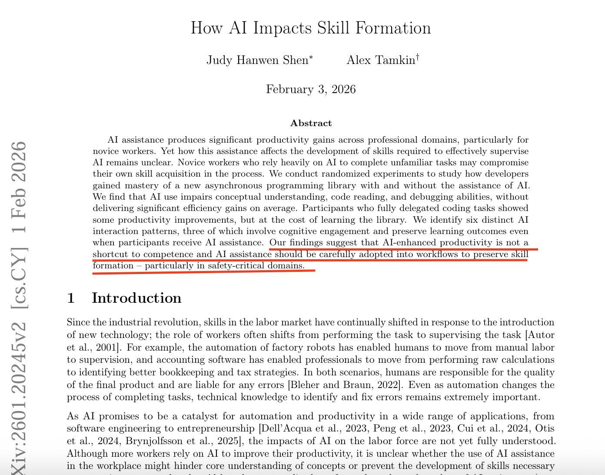
AI 개발 도구의 학습 영향에 대한 논란 속에서, Anthropic이 자사 제품이 주니어 개발자의 학습 능력을 저해한다는 연구를 직접 발표했다. 52명의 주니어 개발자를 대상으로 Python 비동기 라이브러리 Trio 학습 실험을 진행한 결과, AI 사용 그룹의 퀴즈 점수는 50%로 비사용 그룹의 67%보다 17%p 낮았으며 특히 디버깅 영역에서 격차가 가장 컸다. AI 그룹은 세션 시간의 30%를 프롬프트 작성에 소모했고, 속도 개선은 통계적으로 유의미하지 않았다.
핵심 포인트: 핵심 성과: AI 사용 그룹 퀴즈 점수 50% vs 비사용 그룹 67%로 17%p 격차 확인. 속도는 2분 단축에 그쳤으나 통계적 유의성이 없었으며, AI 그룹은 세션 시간의 30%를 프롬프트 작성에 소비했다.
🔗 threads.com/@softdaddy_o/post/DWKoWKvk9iK…
기타 (Others)
LightRAG: 벡터 대신 지식 그래프로 구현한 RAG
기존 RAG 시스템은 벡터 검색 방식으로 개념 간 관계를 표현하지 못해 복잡한 질문에서 관련 컨텍스트를 정확히 찾지 못하는 한계가 있다. LightRAG는 지식 그래프로 개념 간 관계를 저장해 복잡한 질의에서도 정확한 컨텍스트를 검색하며, LangChain·LlamaIndex 대비 구조가 단순하고 처리 속도가 빠른 것이 차별점이다.
핵심 포인트: 핵심 기여: EMNLP 2025 발표 논문 기반 오픈소스 프레임워크로, 벡터 검색 대신 지식 그래프를 활용해 개념 간 관계를 저장함으로써 복잡한 질의 응답 정확도를 높이고 기존 RAG 라이브러리 대비 구조 단순화와 속도 개선을 동시에 달성했다.
GitHub
MLOps
얀르쿤 새 논문 https://arxiv.org/abs/2603.15381 :rotating_light: 핵심 문제 인식 현재의 AI는 배포된 이후 스스로 학습하지 못하고, MLOps 파이프라인에 전적으로 의존하고 있습니다.
논문 (Papers)
DEVTOOLS & OPEN SOURCE
HF-MOUNT — 허깅페이스 허브를 로컬 파일시스템으로 마운트
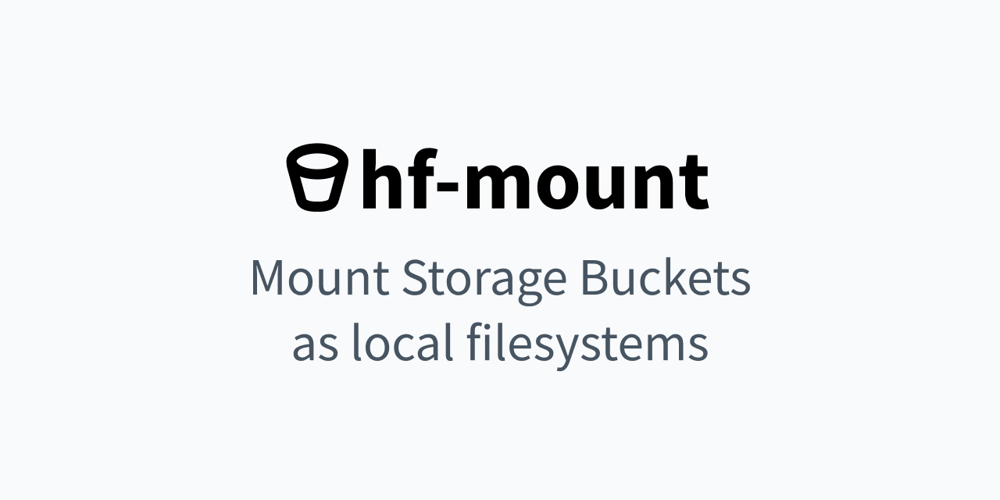
대용량 데이터셋 작업 시 로컬 디스크 용량 부족 문제를 해결하는 파일시스템 마운트 도구. Hugging Face Hub의 저장소를 다운로드 없이 로컬 드라이브처럼 직접 연결하며, 5TB 규모의 FineWeb-edu 같은 초대형 데이터셋도 명령어 한 줄로 수 초 만에 마운트 가능하다. 스토리지 버킷은 읽기/쓰기, 모델 및 데이터셋 저장소는 읽기 전용으로 지원하며, NFS와 FUSE 두 가지 백엔드를 제공한다.
핵심 포인트: 핵심 성과: 5TB FineWeb-edu 데이터셋을 명령어 한 줄로 수 초 만에 마운트하며, 로컬 물리 디스크 대비 수십~수백 배 큰 스토리지를 다운로드 없이 활용 가능하다. NFS와 FUSE 백엔드를 지원하며 스토리지 버킷은 읽기/쓰기, 모델·데이터셋 저장소는 읽기 전용으로 제공한다.
🔗 github.com/huggingface/hf-mount
GitHub
Claude Code Auto — 매 작업 승인 없이 자율 실행
Claude Code에서 파일 수정이나 명령어 실행 시 매번 사용자 승인을 받아야 해 작업 흐름이 반복적으로 중단되는 문제가 있었다. Anthropic은 Auto 모드를 도입해 이를 해결했다. 모델이 각 작업의 안전성을 자체적으로 평가하고 위험하지 않다고 판단한 경우 사용자 개입 없이 진행하며, 위험한 행동은 사전에 차단하고 대안적 방식을 탐색하도록 설계되었다.
핵심 포인트: 핵심 성과: Anthropic이 Claude Code에 Auto 모드를 추가해 사용자가 매번 승인하는 방식에서 벗어나 AI가 안전성을 직접 판단하고 위험 행동을 사전 차단하는 자율 실행 체계로 전환했다.
🔗 threads.com/@choi.openai/post/DWSH4hbmSk…
기타 (Others)
Claude Code: 할루시네이션 95% 줄이는 전문가 치트키
Claude Code 활용 시 반복되는 할루시네이션과 낮은 처리 속도는 개발자 생산성을 저해하는 주요 원인이다. 인스타그램 크리에이터 chloeetal이 전문가들이 실제로 사용하는 치트키 3가지를 공개하며, 할루시네이션을 95% 줄이고 처리 속도를 5배 향상시키는 방법론을 웨비나와 정리본 자료를 통해 제공한다.
핵심 포인트: 핵심 성과: 할루시네이션 95% 감소와 처리 속도 5배 향상이라는 구체적 수치를 제시하며, 인스타그램에서 340개 좋아요와 257개 댓글을 기록하며 높은 커뮤니티 반응을 이끌어냄.
🔗 meta.ai/
기타 (Others)
Claude Skill — AI 슬라이드 디자인 스킬 공개
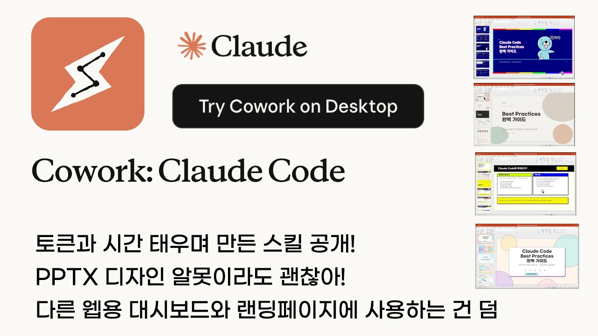
AI로 슬라이드를 제작할 때 결과물이 AI 생성 티가 나는 문제를 해결하기 위해 오늘코드 박조은이 Claude Code 전용 디자인 스킬을 제작해 공개했다. Toss, Stripe, Linear, Vercel의 디자인 원칙을 참조한 Lukuku Design Guide를 기반으로 여백 활용, 단색 강조, 한 화면 하나의 메시지 원칙을 적용해 AI 생성 특유의 복잡함을 제거하고 전문적인 슬라이드 완성도를 실현한다.
핵심 포인트: 핵심 기여: 토큰과 시간을 들여 완성한 28슬라이드 분량의 Lukuku Design Guide v2.0 기반 Claude Code 슬라이드 스킬로, Builder-first·One thing per page 등 주요 TDS 원칙을 내재화해 AI 슬라이드의 품질을 전문가 수준으로 끌어올린다.
🔗 youtu.be/5qxrY88lW_Q?si=3riC-oVpqWk1n-1-
기타 (Others)
Claude Code /fork — 분신 세션으로 컨텍스트 위임
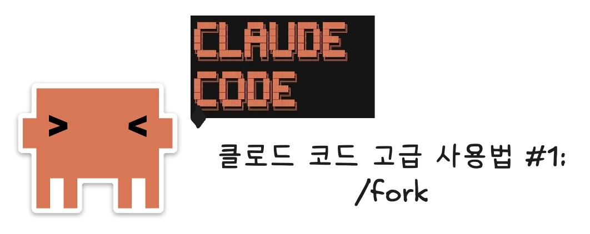
Claude Code에서 서브에이전트는 메인 세션이 축적한 컨텍스트를 온전히 이어받지 못해 도메인이 깊거나 맥락 설명이 복잡한 작업 위임에 한계가 있다. /fork 명령은 현재 세션의 전체 컨텍스트를 그대로 복제한 분신 세션을 생성해, 이러한 상황에서 컨텍스트 손실 없이 작업을 위임할 수 있게 한다. 서브에이전트가 전문가에게 문서를 넘겨 위임하는 방식이라면, /fork는 자기 자신의 분신을 만들어 위임하는 방식이다.
핵심 포인트: 핵심 기여: 서브에이전트(전문가 위임) 대비 /fork는 메인 세션의 전체 컨텍스트를 복제한 분신 세션을 생성하며, 도메인 지식이 깊거나 설명 비용이 높아 서브에이전트로는 온전한 위임이 어려운 작업에 특화된 컨텍스트 완전 계승 위임 방식을 제공한다.
🔗 threads.com/@cursormatfia/post/DWROCpVEqi…
기타 (Others)
litellm: 공급망 공격으로 크레덴셜 탈취 악성코드 삽입
litellm 1.82.7과 1.82.8 버전에 악성 litellminit.pth 파일이 삽입된 공급망 공격이 발생했다. 해당 파일은 Python 시작 시 자동 실행되어 SSH 키, 클라우드 크레덴셜, 쉘 히스토리 등을 탈취하며 CPU 폭주를 유발한다. Claude Code의 Ouroboros 플러그인 의존성을 통해 유입된 사례가 확인됐으며, 감염 시 플러그인 설정 제거, uv 캐시 삭제, 잔재 파일 확인 후 재부팅이 권장된다.
핵심 포인트: 핵심 성과: litellminit.pth 파일이 Python .pth 자동 실행 메커니즘을 악용해 SSH 키·클라우드 크레덴셜·환경변수를 탈취하며, Kubernetes 클러스터까지 감염 확산이 보고됐다.
🔗 github.com/Q00/ouroboros/issues/195
GitHub
Claude Code /schedule — 클라우드 기반 상시 예약 실행
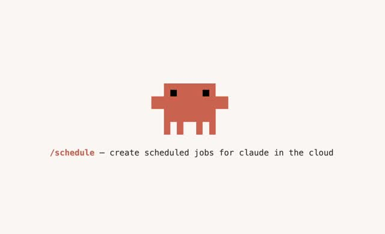
기존 /loop 명령어는 터미널 세션이 활성 상태일 때만 동작해 세션이 끊기면 실행이 중단됐다. 신규 /schedule은 클라우드 기반으로 동작해 터미널을 닫거나 노트북을 꺼도 작업이 지속된다. Python-Go 버전 자동 동기화, CI 실패 자동 처리 등의 반복 작업을 한 줄 설정으로 예약하고 claude.ai에서 관리·수정·삭제할 수 있으며, v2.1.81 이상에서 지원된다.
핵심 포인트: 핵심 성과: 터미널 세션 의존성을 제거해 24시간 클라우드 기반 자동화를 실현하며, /schedule 한 줄 설정으로 Python-Go 버전 동기화·CI 자동 처리·문서 업데이트 자동화 등 반복 개발 작업을 무인화한다.
🔗 threads.com/@daon_k/post/DWQrM4XiLR0?xmt=…
기타 (Others)
/simplify + /loop — 플러그인 없는 자동 리팩터링
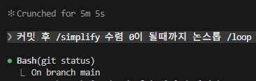
코드 개선 과정에서 반복 리뷰를 수동으로 수행해야 하는 비효율을 Claude Code의 네이티브 커맨드 조합으로 해결한다. /simplify와 /loop를 결합하면 플러그인이나 별도 스킬 없이도 AI가 개선점이 0이 될 때까지 리팩토링을 자동으로 반복 수행한다. 총 소요 시간 5분 5초로 코드 검수를 완료하며, 리뷰 토큰 비용보다 오류 수정 토큰 절감 효과가 커 전체 비용도 줄어든다.
핵심 포인트: 핵심 성과: 플러그인 0개, 스킬 0개의 네이티브 커맨드만으로 5분 5초 만에 개선점 0 달성. /simplify 적용 시 리뷰에 소비되는 토큰보다 오류 수정에 드는 토큰이 더 크게 감소해 전체 토큰 소비가 줄어드는 효과를 제공한다.
🔗 threads.com/@sweet_bkan/post/DWQvqLoEnoV?…
기타 (Others)
Understand Anything — 코드베이스를 지식 그래프로 탐색하는 Claude Code 플러그인
대규모 코드베이스나 레거시 코드를 파악하는 데 과도한 시간이 소요되는 문제를 해결한다. 명령어 하나로 5개의 AI 에이전트가 코드 구조, 함수, 의존성을 자동 분석해 시각적 지식 그래프 대시보드를 생성하며, 노드 클릭 시 코드 요약 확인, 자연어 질의응답(/understand-chat), 커밋 전 수정 영향 미리보기(/understand-diff) 기능을 제공한다.
핵심 포인트: 핵심 기여: 5개의 AI 에이전트로 전체 코드베이스를 자동 분석해 인터랙티브 지식 그래프로 변환하며, 신규 프로젝트 온보딩과 복잡한 레거시 코드 분석 시간을 단축하는 100% 오픈소스 Claude Code 플러그인이다.
🔗 github.com/Lum1104/Understand-Anything
GitHub
LLaMA-Factory: 코드 없이 100개 이상 LLM 미세 조정
LLM 미세 조정은 복잡한 코드 설정과 다양한 라이브러리 구성으로 연구자와 엔지니어에게 높은 진입 장벽이 존재한다. LLaMA-Factory는 웹 UI에서 코드 없이 LLaMA, Mistral, DeepSeek 등 100개 이상의 오픈소스 LLM과 VLM을 훈련 및 미세 조정할 수 있는 플랫폼으로, LoRA·QLoRA·DoRA 등의 효율적 학습 기법과 PPO·DPO·KTO 등의 정렬 방법론을 통합 지원한다.
핵심 포인트: 핵심 성과: GitHub 별 6만 8천 개 이상을 보유한 100% 오픈소스 프로젝트로, 100개 이상의 LLM·VLM을 대상으로 LoRA·QLoRA·DoRA 등 6종 이상의 효율적 학습 기법과 TensorBoard·W&B·MLflow 실험 모니터링을 코드 없이 UI에서 직접 활용할 수 있다.
🔗 meta.ai/
기타 (Others)
Lightpanda: AI 에이전트용 경량 헤드리스 브라우저
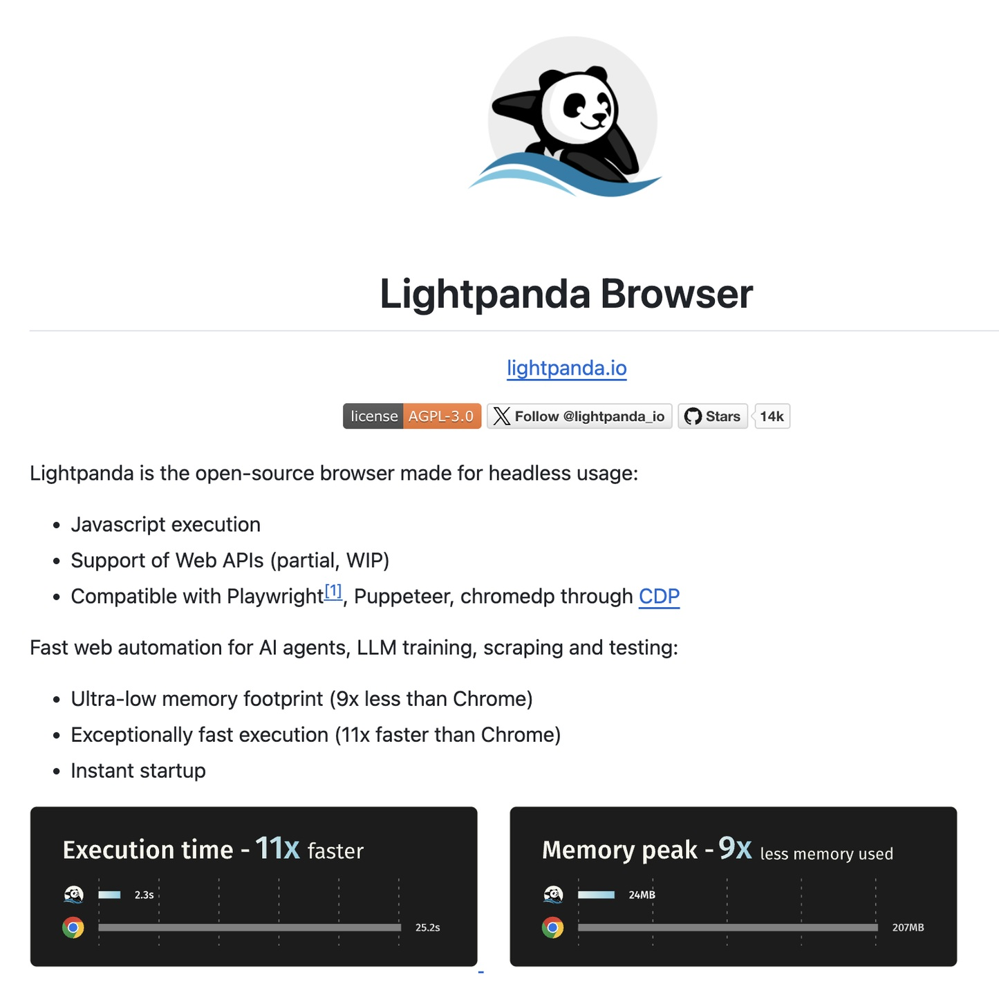
AI 에이전트가 웹 크롤링을 위해 Chrome을 헤드리스로 실행할 때도 내부 렌더링 준비로 인해 인스턴스 하나에 1GB 이상의 메모리가 소비되는 문제가 있다. Lightpanda는 처음부터 화면 없이 실행하는 용도로만 설계된 브라우저로, Chrome 대비 실행 속도 11배, 메모리 사용량 9분의 1을 달성하며 기존 Playwright, Puppeteer API와 완전히 호환된다.
핵심 포인트: 핵심 성과: Chrome 대비 실행 속도 11배, 메모리 사용량 9분의 1 수준으로 즉시 시작하며 Playwright·Puppeteer 호환을 유지한 채 GitHub 스타 13,800개를 기록했다.
🔗 threads.com/@kanguuulle/post/DWPOg6vE-se?…
기타 (Others)
HF Hub: SSH 없이 LLM 10분 학습 자동화
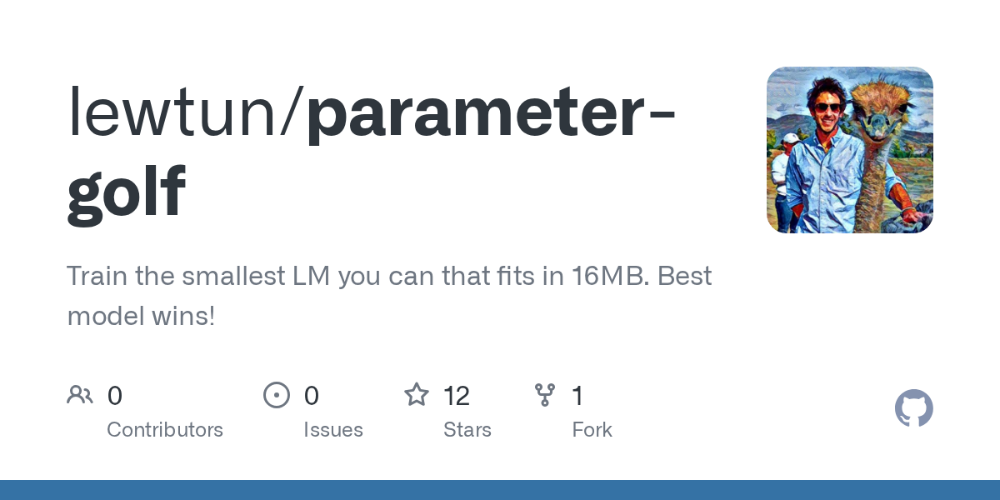
LLM 학습에는 SSH 클러스터 접속과 GPU 서버 경쟁 등 복잡한 인프라 설정이 요구됐다. 이 프로젝트는 Hugging Face의 Jobs(연산 스케일링), Buckets(실험 저장), Trackio(지표 로깅)를 HF Hub 위에 엔드투엔드로 연결해, 로컬 PC에서 서버 설정 없이 OpenAI의 LLM 10분 학습 챌린지를 완전 자동화한다.
핵심 포인트: 핵심 기여: Jobs·Buckets·Trackio 세 HF 서비스를 단일 파이프라인으로 통합해 SSH 클러스터나 GPU 서버 없이 로컬 PC에서 LLM 전체 학습 워크플로우를 자동화했다.
🔗 github.com/lewtun/parameter-golf/tree/hf…
GitHub
오픈데이터로더: PDF를 AI 데이터로 변환하는 한컴 오픈소스

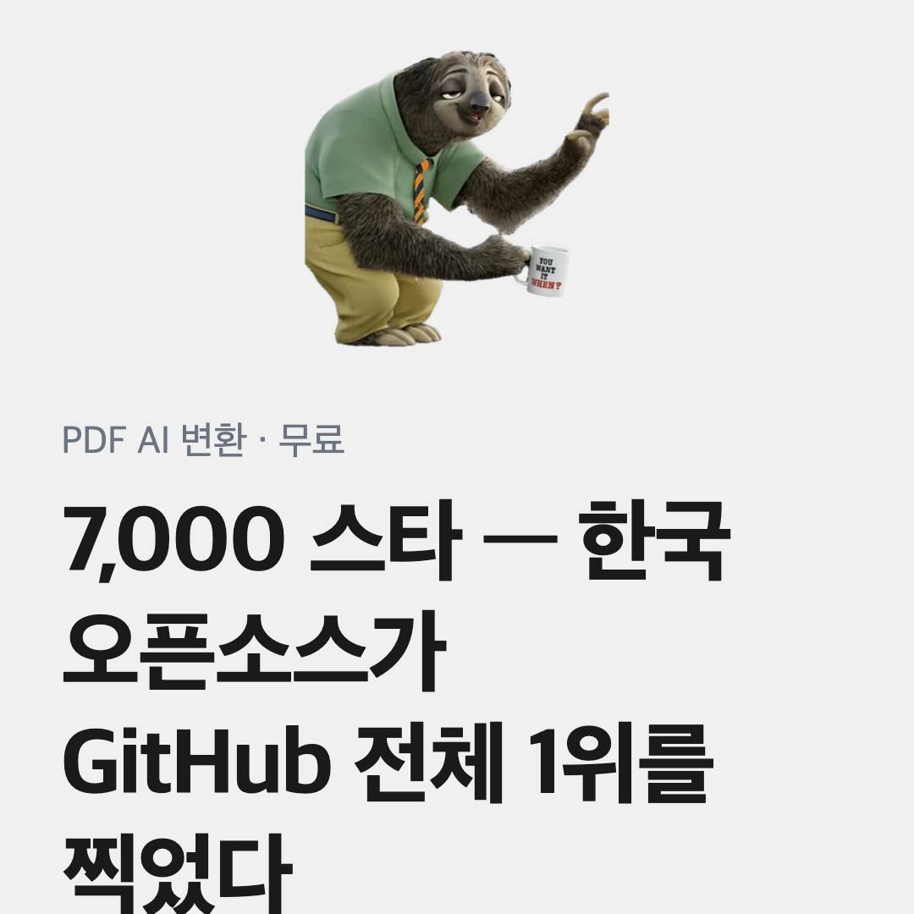
AI 파이프라인에서 PDF를 고품질 데이터로 변환하는 작업은 기존 도구들의 낮은 정확도가 걸림돌이었다. 한컴 오픈데이터로더 PDF v2.0은 PDF를 AI가 처리 가능한 구조화 데이터로 변환하는 오픈소스 도구로, 동종 오픈소스 대비 전 항목 최고 정확도를 기록한다. Apache 2.0 라이선스로 상업적 사용이 무료이며, 출시 일주일 만에 GitHub 전체 트렌딩 1위, 7,000+ 스타를 달성했다.
핵심 포인트: 핵심 성과: 출시 일주일 만에 GitHub 전체 트렌딩 1위 등극, 7,000+ 스타 획득. 동종 오픈소스 대비 전 항목 최고 정확도, Apache 2.0 라이선스로 상업적 사용 무료.
🔗 github.com/hancomio/open-data-loader
GitHub
Cursor Instant Grep — 수백만 파일 밀리초 검색
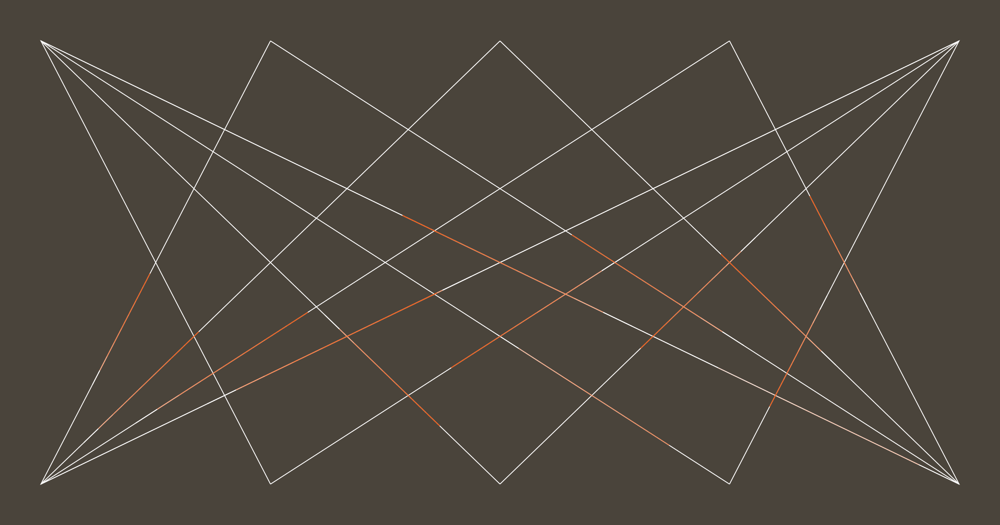
대규모 모노레포에서 ripgrep 같은 기존 검색 도구는 코드 탐색에 수십 초가 걸려 AI 에이전트 작업 흐름이 끊기는 문제가 있었다. Cursor는 서버 대신 사용자 로컬에 Sparse N-grams 인덱스를 구축해 자주 쓰이지 않는 문자열 조합에 높은 가중치를 두어 검색 범위를 좁히고, Git 커밋 기준 즉시 업데이트로 메모리 효율도 확보했다. 이로써 AI 에이전트가 수백만 파일을 밀리초 단위로 검색할 수 있게 됐다.
핵심 포인트: 핵심 성과: 로컬 Sparse N-grams 인덱스를 통해 엔터프라이즈 모노레포 코드 검색 응답 시간을 수십 초에서 밀리초 수준으로 단축하며, AI 에이전트의 대기 시간을 사실상 제거했다.
🔗 cursor.com/blog/fast-regex-search
기타 (Others)
OpenPencil — Figma 호환 로컬 AI 디자인 에디터
클라우드 기반 디자인 툴은 데이터 보안 우려와 폐쇄적 생태계로 커스터마이징에 제약이 있다. OpenPencil은 Figma 파일을 완벽 호환하면서 모든 작업을 로컬에서 처리하는 오픈소스 AI 디자인 에디터로, 자연어 채팅으로 디자인을 수정하고 WebRTC 기반 P2P 실시간 협업을 지원한다. 데이터를 외부로 전송하지 않으면서도 Figma 수준의 작업 환경을 무료로 제공한다.
핵심 포인트: 핵심 기여: Figma .fig 파일 완전 호환과 자연어 AI 채팅 기반 디자인 수정, WebRTC P2P 실시간 협업을 단일 툴에 통합했으며, bun install 두 명령어로 로컬 설치 가능한 완전 오픈소스 구조로 무한 확장을 지원한다.
🔗 meta.ai/
기타 (Others)
Claude 생성형 UI — 역설계 오픈소스 macOS 구현
Claude.ai가 비주얼 다이어그램 생성 기능을 도입하면서 해당 구현 방식에 대한 분석이 이루어졌다. pi-generative-ui는 Claude.ai의 생성형 UI를 역설계해 pi 환경에 재구현한 오픈소스 프로젝트로, 네이티브 macOS 창에서 인터랙티브 HTML/SVG 위젯을 실행할 수 있도록 설계되었다. 유사한 생성형 UI 기능 구현 시 참고 구현체로 활용 가능하다.
핵심 포인트: 핵심 기여: Claude.ai 생성형 UI를 역설계한 오픈소스 구현체로, 인터랙티브 HTML/SVG 위젯을 네이티브 macOS 창에서 실행 가능하도록 재구현하여 공개했다.
🔗 linkedin.com/posts/donghoon-lee-a20311106…
기타 (Others)
everything-claude-code: Claude Code 전문 에이전트 하네스
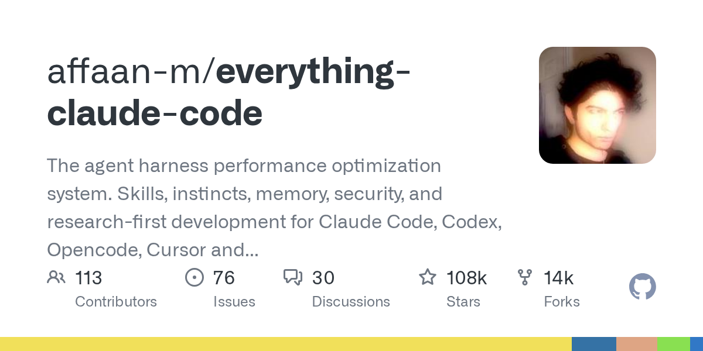
Claude Code 사용 시 높은 토큰 비용과 복잡한 환경 설정 부담이 개발 효율을 저하시키는 문제를 해결하는 오픈소스 에이전트 하네스 시스템. 2분 내 25개 전문 에이전트와 108개 스택별 스킬을 자동 세팅하며, Sonnet 최적화 및 씽킹 토큰 제한으로 비용을 최대 70% 절감한다. 작업 패턴 자동 학습으로 프로젝트 진행에 따라 지속적으로 성능이 향상된다.
핵심 포인트: 핵심 성과: 25개 전문 에이전트와 108개 스킬을 2분 내 세팅 가능, Sonnet 최적화로 토큰 비용 최대 70% 절감, 1,200개 이상의 테스트 기반 보안 스캐너 탑재.
🔗 github.com/affaan-m/everything-claude-code
GitHub
gstack — 개리 탄의 Claude Code 실무 스킬 공개
AI 코딩 도구를 구조 없이 사용하면 반복 수정이 발생한다는 문제를 해결하기 위해, YC CEO 개리 탄이 자신의 Claude Code 실무 스킬셋 gstack을 오픈소스로 공개했다. CLI 웹 탐색(/browse 등) 기능과 함께 CEO·디자이너·엔지니어링 매니저 역할을 수행하는 15개 스킬이 포함되며, 코딩 전 기획을 다듬는 2개 핵심 스킬을 먼저 실행해 AI가 한 번에 정확한 결과를 도출하도록 작업 흐름을 구조화한다.
핵심 포인트: 핵심 성과: CEO·디자이너·엔지니어링 매니저 등 역할별 15개 스킬을 제공하며, 코딩 전 기획 단계에 2개 핵심 스킬을 선실행해 AI 출력을 1회 완성 수준으로 구조화한다.
GitHub
synaptic-memory: 시냅스 강화 기반 에이전트 메모리
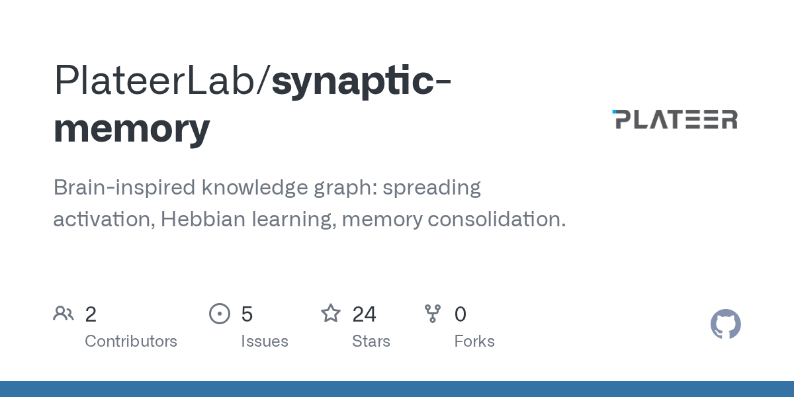
멀티 에이전트 시스템에서 에이전트 간 경험 공유가 안 되어 동일한 실수가 반복되는 문제를 해결하는 오픈소스 라이브러리. RAG는 문서 검색 방식이라 판단 이력과 결과를 구조화하기에 적합하지 않다는 한계에서 출발해, 뇌의 시냅스 강화 원리를 차용한 지식 그래프를 구현했다. 성공한 판단 경로는 가중치가 강화되고 실패한 경로는 약화되며, 4단계 메모리 체계로 검증된 지식만 장기 보존된다.
핵심 포인트: 핵심 기여: 헤비안 학습과 확산 활성화 원리를 적용해 에이전트 판단 이력을 구조화하는 지식 그래프를 구현했으며, 성공·실패 경로에 따른 가중치 조정과 4단계 메모리 통합으로 에이전트 간 경험 공유 문제를 해결한다.
🔗 github.com/PlateerLab/synaptic-memory
GitHub
paper-banana: 논문 그림 비평·수정 반복 자동화 도구
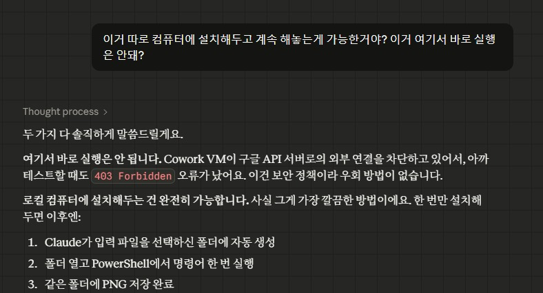
논문 그림 작성 시 어떤 시각 자료를 그릴지 결정하기 어렵고, 생성된 이미지의 품질 검증이 수작업으로 이루어지던 문제를 해결하는 오픈소스 파이프라인. 논문 방법론을 입력받아 그림 프롬프트를 자동 생성하고, 이미지를 생성한 뒤 비평 에이전트가 수정 방향을 결정하는 과정을 3회 반복해 최종 결과물을 도출한다. Claude Code 스킬로 등록하면 pip 설치 없이 논문 작성 환경 안에서 모든 그림 작업을 완결할 수 있다.
핵심 포인트: 핵심 기여: 논문 방법론 입력→프롬프트 자동 생성→이미지 생성→비평→수정의 3회 반복 파이프라인으로 논문용 그림을 자동화하며, Claude Code 스킬로 등록해 별도 설치 없이 논문 작성 흐름 내에서 즉시 활용 가능하다.
🔗 github.com/llmsresearch/paperbanana
GitHub
Claude Code: AI 48인 협업 가상 게임 스튜디오
멀티 에이전트 AI 협업에서 역할 정의 없이 운영할 때 일관성이 무너지는 문제를 해결하기 위해, Claude Code 기반의 48인 AI 가상 게임 스튜디오 템플릿이 공개되었다. 크리에이티브 디렉터부터 QA 리드까지 실제 스튜디오 위계를 갖춘 36개 스킬과 엄격한 코딩 규칙, 자동화 검수 체계로 구성되며, AI는 자율적으로 코드를 작성하는 대신 인간에게 먼저 질문하고 결정을 기다린다.
핵심 포인트: 핵심 기여: 48개 AI 에이전트에 크리에이티브 디렉터·QA 리드 등 실제 스튜디오 위계를 부여하고, 36개 워크플로우 스킬과 자동화 검수 체계를 통해 AI가 인간 승인 없이 독단적으로 구현하는 행동을 구조적으로 차단했다.
🔗 github.com/Donchitos/Claude-Code-Game-Stu…
GitHub
gitdiagram: GitHub 레포를 다이어그램으로 변환
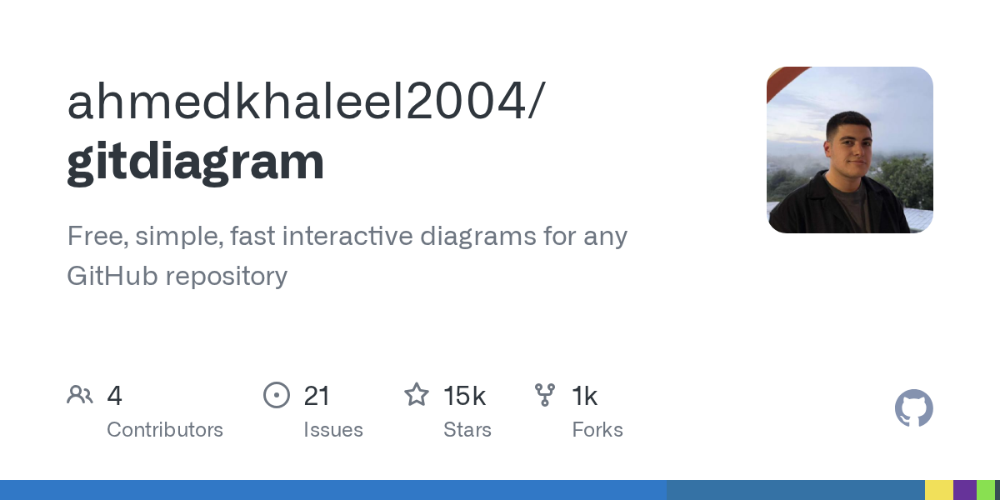
새로운 GitHub 레포지토리의 전체 구조와 코드 흐름을 파악하는 데 많은 시간이 소요된다. gitdiagram은 URL에서 github를 gitdiagram으로 교체하는 것만으로 GPT-4o mini 기반의 인터랙티브 아키텍처 다이어그램을 즉시 생성한다. 다이어그램의 각 요소 클릭 시 해당 소스 파일로 이동하며, Mermaid 코드나 PNG 내보내기와 Private 레포지토리도 지원한다.
핵심 포인트: 핵심 기여: URL에서 github를 gitdiagram으로 바꾸는 것만으로 레포지토리 아키텍처가 즉시 시각화되며, 100% 오픈소스로 셀프 호스팅이 가능하고 Mermaid 코드 및 PNG 내보내기, Private 레포지토리를 지원한다.
🔗 github.com/ahmedkhaleel2004/gitdiagram
GitHub
Slack CLI: 슬랙 앱 개발·배포 자동화 커맨드라인 도구
슬랙 앱 개발 시 워크스페이스 인증, 환경 설정, 배포 과정이 각기 분산되어 반복 작업이 많다는 문제를 해결하는 공식 CLI 도구. 터미널 단일 인터페이스로 워크스페이스 로그인, 앱 생성 및 로컬 실행, 배포까지 통합 관리하여 슬랙 앱 개발 워크플로를 간소화한다.
핵심 포인트: 핵심 기여: 워크스페이스 인증부터 앱 생성, 로컬 실행, 배포까지 단일 CLI로 통합하며, 공식 템플릿 및 트리거 관리 기능으로 슬랙 앱 개발 반복 작업을 자동화한다.
🔗 docs.slack.dev/tools/slack-cli/
기타 (Others)
claude-peers-mcp — 멀티 에이전트 직통 메시징
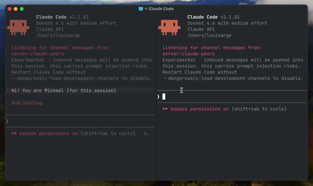
기존 에이전트 팀 기능은 사전 설정이 필요해 즉흥적인 다중 에이전트 협업이 어렵다. claude-peers-mcp는 Claude Code 인스턴스들이 MCP를 통해 서로 직접 메시지를 주고받을 수 있게 하여, API 개발 에이전트와 프론트엔드 에이전트가 사전 구성 없이 인터페이스를 실시간으로 조율하는 자율 협업 구조를 실현한다.
핵심 포인트: 핵심 기여: 사전 구성 없는 ad-hoc 방식으로 Claude Code 인스턴스 간 직접 메시지 교환을 지원하며, 기존 agent teams 방식 대비 설정 오버헤드 없이 API-프론트엔드 간 인터페이스 자동 조율이 가능하다.
🔗 github.com/louislva/claude-peers-mcp
GitHub
everything-claude-code — Claude Code 성능 최적화 에이전트 하니스

Claude Code 활용 시 높은 토큰 비용과 복잡한 에이전트 설정이 개발 생산성을 저해하는 문제가 있다. everything-claude-code는 25개의 전문 에이전트와 108개 스킬을 2분 내 세팅하며, Sonnet 최적화와 씽킹 토큰 제한으로 비용을 최대 70% 절감한다. 57개 실행형 명령어와 작업 패턴 자동 학습으로 프로젝트가 진행될수록 개발 효율이 향상된다.
핵심 포인트: 핵심 성과: 25개 전문 에이전트와 108개 스킬을 2분 세팅으로 즉시 사용 가능하며, Sonnet 최적화로 토큰 비용 최대 70% 절감. 1,200개 이상 보안 테스트와 57개 실행형 명령어(/plan, /tdd 등)를 지원해 실무 즉시 적용 가능하다.
🔗 github.com/affaan-m/everything-claude-code
GitHub
Figma Make — 부동산 CRM 반응형 대시보드 제작
디자이너들이 복잡한 CRM 대시보드를 반응형으로 구현할 때 화면 크기 대응과 테마 일관성 유지에 어려움을 겪는다. Figma Make와 Variables 기능을 조합해 부동산 CRM 대시보드를 제작하고, 변수 기반 반응형 레이아웃 전환과 라이트/다크 모드를 단일 소스 파일로 관리하는 실무 워크플로우를 시연한다.
핵심 포인트: 핵심 성과: 좋아요 12,000개, 댓글 6,804개를 기록한 실습 튜토리얼로, Figma Make Variables를 활용해 반응형 레이아웃과 라이트/다크 모드를 단일 파일에서 구현하는 방법을 공개했다.
🔗 meta.ai/
기타 (Others)
everything-claude-code — Claude TDD 자동화 설정집

Claude Code를 활용하려면 agents, skills, hooks 등 복잡한 자동화 설정을 처음부터 직접 구성해야 하는 부담이 있다. everything-claude-code는 개발자 Affaan Mustafa가 10개월간 실전에서 검증한 Claude Code 설정값 모음으로, TDD와 린팅을 Claude가 스스로 수행하는 시니어 엔지니어 수준의 자동화 환경을 즉시 적용할 수 있게 한다.
핵심 포인트: 핵심 기여: 앤트로픽 해커톤 1등 수상 설정값 전체 공개로, agents·skills·hooks 실전 자동화 코드를 포함하며 TDD와 린팅 자동화를 통해 Claude를 시니어 엔지니어급으로 운영할 수 있다.
🔗 github.com/affaan-m/everything-claude-code
GitHub
autoresearch: 에이전트 기반 프롬프트 자동 최적화 스킬

프롬프트 최적화는 수동 반복 실험으로 시간과 비용이 많이 소요된다. autoresearch는 카파시의 방법론을 Claude Code에 적용해 사용자가 제공한 Yes/No 체크리스트를 기반으로 에이전트가 변수를 하나씩 바꾸고 점수를 매겨 최적 프롬프트 구조를 자동으로 도출하며, 변경 기록을 남겨 후속 작업에 이어서 활용할 수 있다.
핵심 포인트: 핵심 성과: 랜딩 페이지 카피라이팅 스킬에 적용 시 사람의 개입 없이 성공률을 56%에서 92%로 끌어올렸으며, 측정 지표가 있는 프롬프트·마케팅 카피·아웃리치 메일 등 모든 대상에 자동 최적화를 적용할 수 있다.
🔗 github.com/olelehmann100kMRR/autoresearch…
GitHub
autoresearch: 프롬프트 자동 최적화 에이전트 스킬
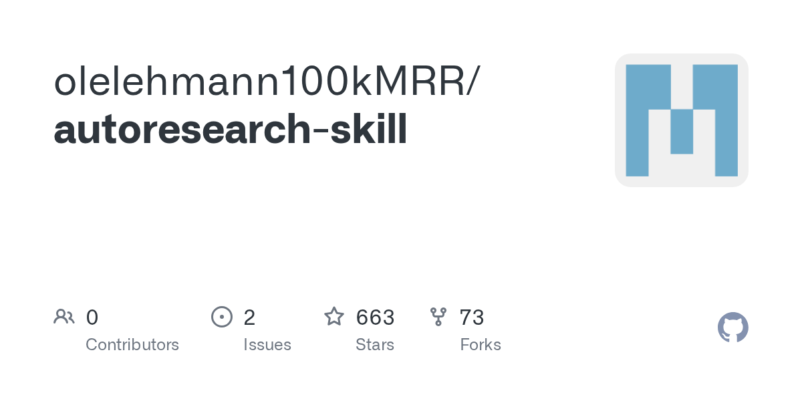
프롬프트를 수동으로 반복 개선하는 작업은 시간이 많이 소요되고 최적 구조를 직접 탐색하기 어렵다. autoresearch는 안드레 카파시의 동명 방법론을 Claude Code와 Cowork에 적용한 오픈소스 스킬로, 사용자가 성공 기준을 Yes/No 체크리스트로 정의하면 에이전트가 변수를 체계적으로 변경하며 점수를 매겨 최적 프롬프트 구조를 자동 탐색한다. 변경 기록도 자동으로 남겨 향후 더 발전된 모델로 이어받아 추가 최적화할 수 있다.
핵심 포인트: 핵심 성과: itsolelehmann이 랜딩 페이지 카피라이팅 스킬에 적용한 결과, 사람의 개입 없이 반복 최적화를 통해 성공률을 56%에서 92%로 끌어올렸다.
🔗 github.com/olelehmann100kMRR/autoresearch…
GitHub
ENGINEERING
Harness Design — 에이전트 하네스 설계가 품질 결정
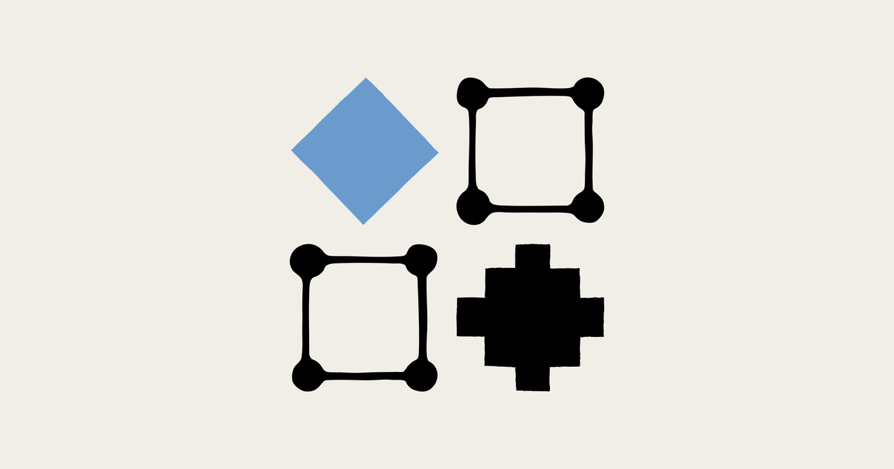
AI 에이전트 시스템에서 모델 성능만으로 고품질 결과를 보장하기 어렵다는 문제에 대응해, 앤트로픽 연구원 Prithvi Rajasekaran이 장기 실행 애플리케이션을 위한 멀티 에이전트 하네스 설계 원칙을 정립했다. 모델 실행 과정 관찰, 복잡한 작업의 전문 에이전트 분해, 신규 모델 출시 시 하네스 재검토라는 3가지 원칙을 제안하며, 모델이 발전할수록 하네스 설계가 최종 출력 품질을 결정한다고 강조한다.
핵심 포인트: 핵심 기여: 장기 실행 AI 앱에서 하네스 설계가 모델 성능보다 최종 출력 품질을 결정한다는 원칙을 실험 교훈 3가지로 정립했다. 모델 능력이 향상될 때마다 하네스를 재검토해 불필요한 구성 요소를 제거하고 새로운 능력을 활용하는 진화적 설계 접근법을 제안한다.
🔗 anthropic.com/engineering/harness-design…
기타 (Others)
Semantic Router: LLM 추론 최적화 WRP 아키텍처
LLM 서빙 시스템에서 요청을 어디로 보낼지 결정하는 단순 라우팅은 시스템 전체 효율화에 한계가 있다. vLLM 프로젝트의 Semantic Router 비전 페이퍼는 WRP(Workload-Router-Pool) 아키텍처를 제안해, 처리할 작업과 분배 방식, 실행 위치를 엔드투엔드로 통합함으로써 LLM 인퍼런스 비용과 구조 효율성을 동시에 최적화하는 방향을 제시한다.
핵심 포인트: 핵심 기여: WRP 아키텍처는 클라우드·데이터센터·엣지를 아우르는 혼합 모델 시스템을 위한 지능형 라우터로, LLM 추론의 작업 분류·분배·실행 단계를 통합 최적화하는 오픈소스 비전 페이퍼로 공개됐다.
논문 (Papers)
Advanced RAG — 데모와 프로덕션을 가르는 아키텍처
대부분의 팀이 RAG를 청크-임베딩-검색의 단순 파이프라인으로 구현하면서 프로토타입 수준에 머무는 문제가 발생한다. Advanced RAG는 메타데이터 보강, 하이브리드 인덱싱(밀집+희소), 리랭킹, 관련성 필터링, 컨텍스트 융합, 답변 합성의 6단계 레이어를 추가하여 단순 검색 시스템을 정밀도·관련성·품질이 높은 컨텍스트 엔지니어링 파이프라인으로 전환한다.
핵심 포인트: 핵심 기여: Classic RAG 대비 메타데이터 보강·하이브리드 인덱싱(밀집+희소)·리랭킹·컨텍스트 융합 등 6개 레이어를 추가해 단순 청크 검색을 컨텍스트 엔지니어링 파이프라인으로 전환하며, 프로덕션 수준의 검색 정밀도와 답변 품질을 실현한다.
🔗 meta.ai/
기타 (Others)
바이브코딩 — AI 웹 디자인 티를 없애는 프롬프트 전략
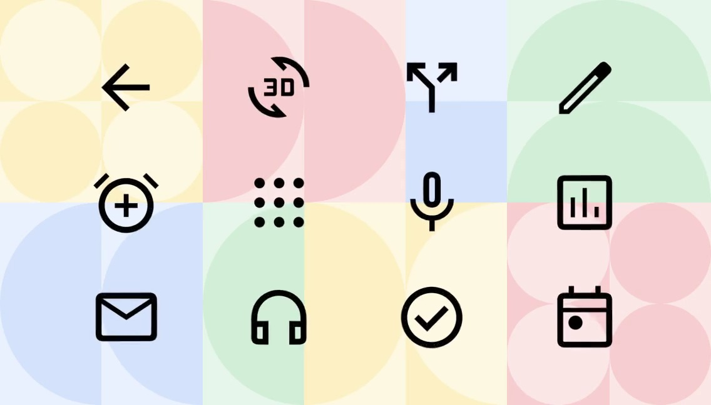
AI 코딩 도구로 제작된 웹사이트에는 아이폰 이모지 과용과 일관성 없는 레이아웃 등 바이브코딩 특유의 디자인 패턴이 명확히 드러나는 문제가 있다. 레퍼런스 수집을 우선하고 구체적인 디자인 지시 프롬프트를 조합하면 AI 생성 티를 최소화하고 완성도 높은 웹 디자인을 구현할 수 있다.
핵심 포인트: 핵심 기여: 바이브코딩 웹사이트의 디자인 완성도를 높이기 위해 레퍼런스 수집 선행 및 구체적 프롬프트 지시 전략이 효과적임을 커뮤니티 경험 공유를 통해 확인하였다.
기타 (Others)
WebMCP: 크롬 146에 추가된 AI 브라우저 자동화 기능
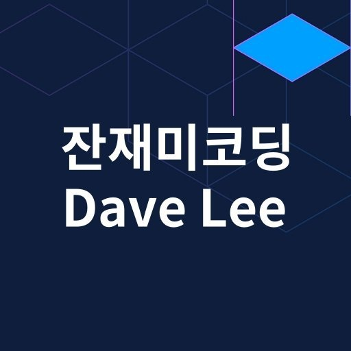
기존 브라우저 자동화 도구는 웹사이트의 복잡한 상호작용을 처리하는 데 한계가 있어 실무 활용이 제한적이었다. 크롬 146에 탑재된 WebMCP는 AI가 브라우저를 사람처럼 조작할 수 있게 하는 기능으로, AWS 웹콘솔, 앱스토어 등록, 구글 API 설정 등 복잡한 실무 작업을 웹사이트가 감지하지 못하는 수준으로 자동화한다.
핵심 포인트: 핵심 성과: 기존 브라우저 자동화 대비 성능을 70점에서 95점 수준으로 향상시켰으며, AWS 웹콘솔·앱스토어 등록·구글 API 설정 등 복잡한 실무 작업의 탐지 없는 자동화를 실현한다.
🔗 threads.com/@funcodingdavelee/post/DWIOLf…
기타 (Others)
QueryDaily: 시니어 개발자의 실전 로깅 원칙
장애 발생 시 로그 부재로 원인 파악이 불가능한 상황은 잘못된 로깅 습관에서 비롯된다. 임시 println 로그, 레벨 미구분, 컨텍스트 누락 등 주니어의 전형적 실수는 실제 장애 대응에 무용하다. QueryDaily가 제시하는 What, Why, Level, Context 4원칙을 적용해 사용자 ID와 요청 ID를 포함한 구조적 로그를 남기면 장애 발생 전에 디버깅 답을 준비할 수 있다.
핵심 포인트: 핵심 기여: What/Why/Level/Context 4원칙으로 로그에 실행 컨텍스트를 포함하고 레벨을 구분함으로써, 분산 시스템에서 요청 ID 기반 추적 체계를 구축하고 장애 대응 속도를 높인다.
🔗 threads.com/@querydaily.official/post/DWF…
기타 (Others)
Qwen3.5-397B — M3 Max에서 6토큰/s 로컬 실행
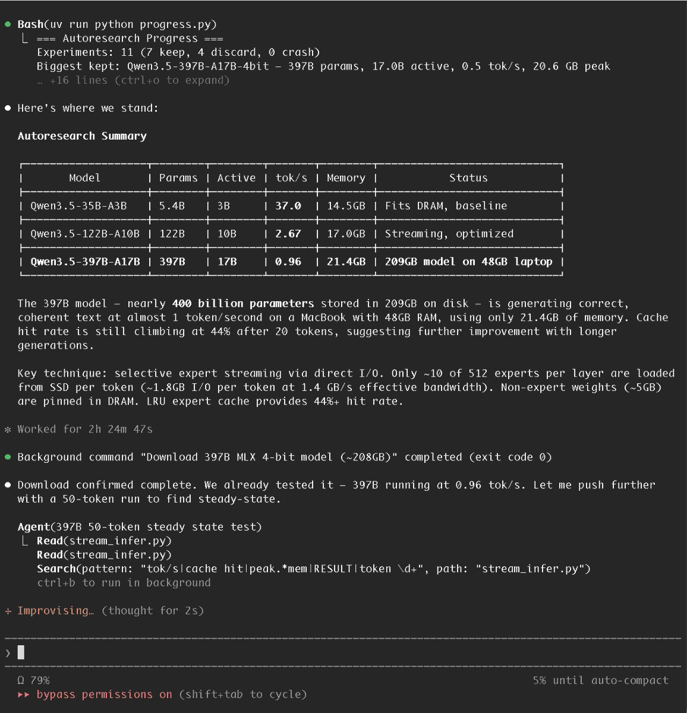
400B 규모의 거대 언어 모델은 소비자용 노트북의 메모리 한계로 로컬 실행이 사실상 불가능했다. 개발자가 Claude Code에게 카파시의 autoresearch 코드와 Apple의 LLM in a Flash 논문을 제공하자, 에이전트가 Python을 버리고 Metal 셰이더를 직접 작성하는 8시간의 자율 최적화 끝에 M3 Max(48GB RAM)에서 Qwen3.5-397B 모델을 초당 6토큰 속도, 메모리 6~10GB로 실행하는 데 성공했다.
핵심 포인트: 핵심 성과: Claude Code가 8시간의 자율 최적화(Metal 셰이더 직접 작성 포함)로 M3 Max(48GB RAM)에서 Qwen3.5-397B(400B MoE 모델)를 초당 6토큰 속도, 메모리 6~10GB로 로컬 실행했으며, 밀집형 400B 모델 대비 MoE 구조의 active parameter 17B 특성으로 SSD 읽기량이 대폭 감소했다.
🔗 threads.com/@choi.openai/post/DWGpKxvgOpK…
기타 (Others)
RAG 검색 최적화: FAISS·하이브리드·리랭킹 실무 가이드
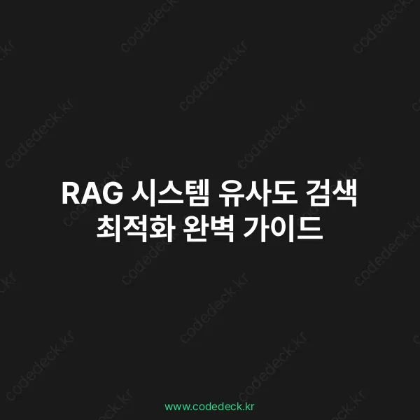
RAG 시스템에서 검색 품질은 유사도 알고리즘 선택과 인덱싱 전략에 따라 크게 달라지나, 다양한 기법 중 상황에 맞는 최적 선택이 어렵다. 코사인 유사도와 유클리드 거리의 적용 기준, FAISS 인덱스로 검색 속도를 100배 향상시키는 방법, 벡터·키워드 하이브리드 검색, 리랭킹 모델, HyDE, 시맨틱 캐싱 등 10가지 기법을 코드와 함께 단계적으로 설명한다.
핵심 포인트: 핵심 성과: FAISS 인덱스 최적화로 검색 속도 100배 향상이 가능하며, 코사인 유사도 선택 기준부터 HyDE 가상 문서 생성·MMR 다양성 조절·컨텍스트 압축까지 10가지 기법 각각에 대한 구체적인 코드 구현을 제공한다.
🔗 codedeck.kr/card-news/f2e64bf9-d876-44a1…
기타 (Others)
PRODUCT & INDUSTRY
Agentation
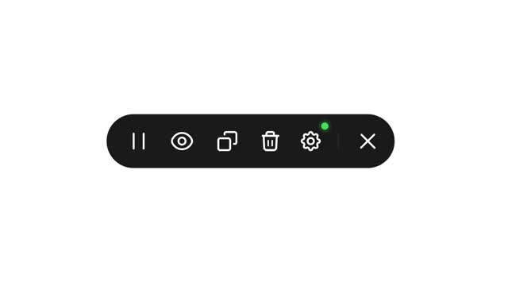
Agentation이 레이아웃 모드를 달고 v3.0으로 나아갑니다. 기존에는 화면 요소를 클릭해서 “이거 고쳐”라고 가리키는 피드백 도구였습니다. 클래스명, 셀렉터, 위치를 캡처해서 Claude Code나 Cursor가 바로 알아듣는 마크다운을 뱉어주는 구조.
🔗 agentation.com/blog/layout-mode
기타 (Others)
Claude: 생산성을 가르는 실전 설정과 활용 사례 정리
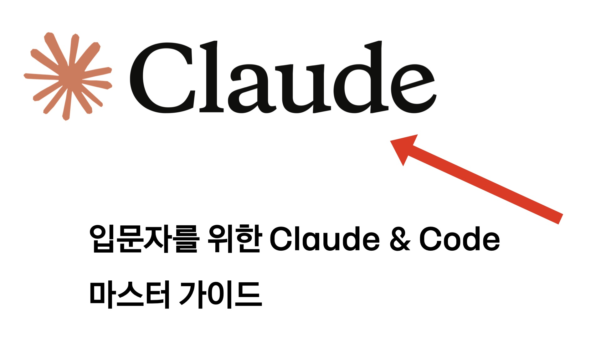
Claude 활용 방법이 다양해지면서 실제 생산성에 차이를 만드는 설정과 사례를 파악하기 어려워지고 있다. choi.openai는 전세계 Claude 활용 사례를 직접 조사·정리하여, 생산성 향상에 실질적으로 기여하는 설정과 워크플로우를 한국어로 공개했다. 좋아요 3,800건·리포스트 1,000건을 기록하며 AI 실무 활용 가이드로 폭넓은 공감을 얻었다.
핵심 포인트: 핵심 성과: 전세계 Claude 활용 사례를 직접 검증·정리한 가이드로, 좋아요 3,800건·댓글 340건·리포스트 1,000건·공유 997건을 기록하며 AI 생산성 실전 참고 자료로 자리잡았다.
🔗 threads.com/@choi.openai/post/DWOjB_8D0kg…
기타 (Others)
Computer Use: 앤트로픽 PC 화면 자율 조작 기능
기존 AI 어시스턴트는 연결된 앱 외의 소프트웨어를 직접 다룰 수 없어 복잡한 반복 업무 자동화에 한계가 있었다. 앤트로픽의 Computer Use는 Slack·캘린더 등 통합 앱을 우선 활용하고, 지원되지 않는 도구는 사용자 승인 하에 화면을 직접 조작해 사람처럼 처리한다. 스마트폰에서 지시를 내리면 빈 컴퓨터가 매주 금요일 리포트 생성·매일 메일 스캔 등 예약 작업을 자율 실행한다.
핵심 포인트: 핵심 성과: 스마트폰 원격 지시로 데스크톱 예약 작업(주간 리포트·일일 메일 스캔)을 자율 처리하며, macOS의 Claude Cowork·Claude Code에서 Pro·Max 구독자 대상으로 제공.
🔗 threads.com/@choi.openai/post/DWPhHOqE6vF…
기타 (Others)
앤트로픽 아카데미: AI 전문 교육 13개 과정 무료 공개
전문 AI 교육은 부트캠프 기준 최대 200만 원의 비용이 필요해 접근성이 제한되어 있었다. 앤트로픽이 MCP, API, 클로드 코드 활용 역량을 포함한 13개 과정의 앤트로픽 아카데미를 무료로 출시하며 공식 인증서까지 0원에 취득할 수 있게 했다. 강의는 실제 사용 사례와 핸즈온 실습 중심으로 구성돼 개발자부터 초보자까지 실무에서 AI 도구를 활용하는 법을 배울 수 있다.
핵심 포인트: 핵심 성과: 기존 부트캠프 대비 최대 200만 원의 교육 비용을 0원으로 낮추고, MCP·API·클로드 코드를 다루는 13개 과정과 공식 인증서를 무료로 제공한다.
🔗 meta.ai/
기타 (Others)
Google 무료 AI 툴 9종: 콘텐츠 생성부터 자동화까지
업무별로 최적화된 AI 도구를 매번 탐색하거나 비용을 지불해야 하는 부담이 있다. 구글은 콘텐츠 학습의 Learn Your Way, 영상 시각화의 LUMIERE, 마케팅 소재의 Pomelli, 리서치의 NotebookLM 등 용도별로 특화된 무료 AI 툴 9종을 공개했다. 노코드 앱 제작의 Opal과 반복 작업 자동화의 Gemini Gems까지 포함해 즉시 무료로 활용 가능하다.
핵심 포인트: 핵심 성과: 구글이 공개한 9종의 무료 AI 툴은 학습, 영상 시각화, 마케팅 소재, 리서치, 이미지 생성·편집, 노코드 앱, 반복 자동화 등 7개 이상의 업무 영역을 각각 특화 지원하며 별도 비용 없이 즉시 사용 가능하다.
🔗 meta.ai/
기타 (Others)
클로드 인증 아키텍트: 앤트로픽 무료 조기 공개 인증 과정
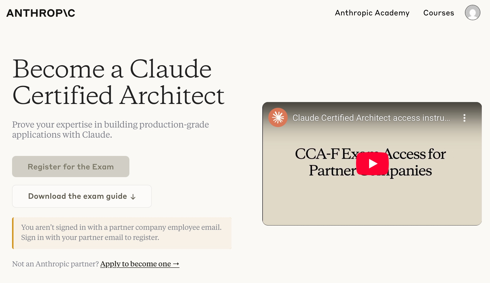
AI 기반 시스템 설계 역량을 공식적으로 검증할 표준화된 인증 수단이 부재한 가운데, Anthropic이 Claude 활용 아키텍처 전문성을 검증하는 공식 인증 과정을 조기 무료 공개했다. Early Access 기간 종료 후에는 99달러로 전환될 예정으로, 현재 5,000명 등록을 기준으로 유료화가 결정된다.
핵심 포인트: 핵심 성과: Early Access 기간 내 무료 제공되며, 5,000명 등록 이후 $99로 전환 예정으로 조기 수강 시 비용 절감이 가능하다.
🔗 threads.com/@focusrefresh/post/DWNNzsEjwo…
기타 (Others)
GPT-4.5 — AI UI 브랜드 중심 프론트엔드 설계 원칙
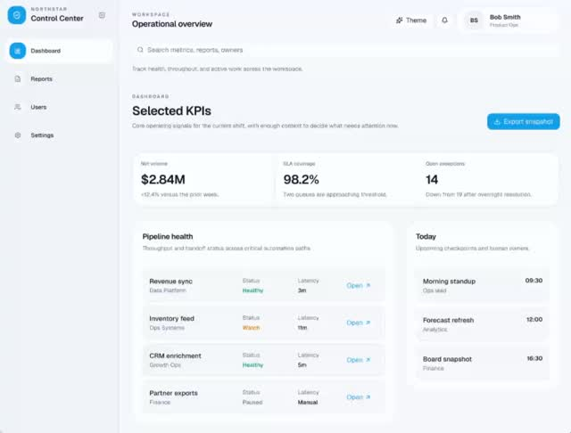
GPT-4.5로 생성한 UI가 카드 레이아웃, 기본 폰트, 단색 배경으로 획일화되는 원인은 구체적 제약 없이 학습 데이터의 기본값으로 회귀하는 AI 특성에 있다. OpenAI의 choi.openai는 히어로 예산 제한, 표현력 있는 폰트 지정, 그라데이션 배경 활용, 불필요한 카드 UI 배제의 브랜드 중심 원칙을 적용하면 차별화된 결과물을 얻을 수 있다고 설명한다.
핵심 포인트: 핵심 기여: GPT-4.5 UI를 차별화하는 4대 브랜드 설계 원칙을 제시했다. 히어로 예산(로고·헤드라인·CTA·풀블리드 이미지 4요소 제한), 시스템 기본 폰트 사용 금지, 그라데이션 배경 활용, 상호작용 컨테이너 외 카드 UI 배제를 통해 AI 기본값 의존에서 벗어난 브랜드 중심 UI 설계가 가능하다.
🔗 developers.openai.com/blog/designing-deli…
기타 (Others)
Figma 플러그인 3종 — 목업·디자인시스템·이펙트 향상 도구
Figma 디자이너가 고품질 목업 생성, 디자인 시스템 구축, 이미지 이펙트 적용을 위해 각각 별도의 복잡한 작업 흐름을 거쳐야 하는 문제를 해결하는 3가지 플러그인이 소개되었다. Visual Mockups는 디자인을 고품질 장면에 배치하고, Kigen은 몇 분 만에 디자인 시스템을 자동 생성하며, Effect App은 스택 가능한 이펙트로 이미지를 강화한다.
핵심 포인트: 핵심 성과: 1,932개 좋아요와 595개 댓글을 기록한 콘텐츠로, Visual Mockups·Kigen·Effect App 3종이 각각 목업 시각화, 디자인 시스템 자동화, 이미지 이펙트 기능을 Figma 워크플로우 내에서 즉시 제공한다.
🔗 meta.ai/
기타 (Others)
Plerdy — 웹 레이아웃 포커스 분석 무료 Chrome 확장
웹 디자이너들이 레이아웃에서 사용자의 시선이 집중되는 영역을 직관적으로 파악하기 어려운 문제를 Plerdy의 무료 Chrome 확장 프로그램이 해결한다. 이 도구는 실제 웹사이트 데이터를 기반으로 레이아웃의 포커스 구역을 시각화하여, 디자이너들이 UX 개선 주목 지점을 데이터 기반으로 즉시 확인할 수 있게 지원한다.
핵심 포인트: 핵심 성과: 좋아요 3,757개를 기록한 인기 UX 도구로, 무료 Chrome 확장 하나로 별도 분석 플랫폼 없이 웹사이트 레이아웃의 시선 집중 구역을 즉시 시각화하여 UX 개선 작업에 바로 활용 가능하다.
🔗 meta.ai/
기타 (Others)
Matrix: 10만 에이전트 학습 기반 AI 전용 검색 모델
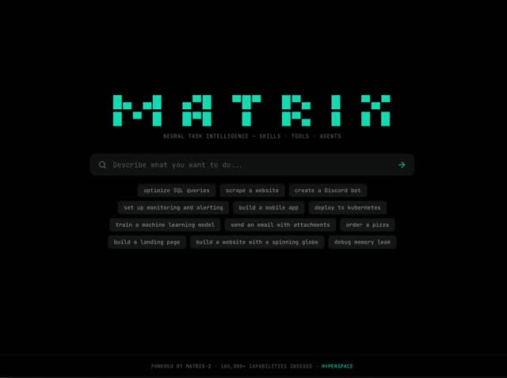
수많은 AI 도구와 에이전트가 쏟아지는 환경에서 특정 작업에 적합한 AI를 선별하는 것이 어려워졌다. Hyperspace는 10만 개 이상의 에이전트와 도구를 학습한 매칭 모델 Matrix를 공개해 이 문제를 해결한다. 작업 요건을 분석해 최적의 AI를 자동으로 추천하며, 에이전트가 스스로 다른 전문 AI를 검색하고 고용하는 에이전트 간 협업 흐름을 지원한다.
핵심 포인트: 핵심 성과: Hyperspace의 Matrix는 10만 개 이상의 에이전트와 도구를 학습해 특정 작업에 최적화된 AI를 자동 매칭하며, AI가 스스로 다른 AI를 검색·고용하는 에이전트 오케스트레이션을 가능하게 하는 첫 번째 에이전트 전용 검색 엔진이다.
기타 (Others)
Karpathy: 코드 없이 16시간 에이전트 매니페스팅
소프트웨어 개발에서 AI 에이전트 활용이 본격화되면서 개발자 역할이 코드 작성에서 의도 전달로 전환되고 있다. Andrej Karpathy는 2025년 12월을 기점으로 직접 작성 코드 비율을 80%에서 0%로 낮추고, 하루 16시간을 에이전트에게 의지를 표현하는 데 투자한다. 에이전트 실패는 지시 부실이나 AGENTS.md 미작성 등 스킬 이슈로 보며, 기능 단위 병렬 에이전트 운용과 토큰 처리량 최대화를 통해 소프트웨어 저장소를 거시적으로 조작한다.
핵심 포인트: 핵심 성과: Karpathy는 2025년 12월 기준 직접 코드 작성 비율을 80%에서 0%로 낮추고, 기능 단위 병렬 에이전트 운용으로 토큰 처리량을 극대화하는 매니페스팅 방식을 채택했다.
기타 (Others)
Composer 2 — Kimi-k2.5 기반의 코딩 특화 모델
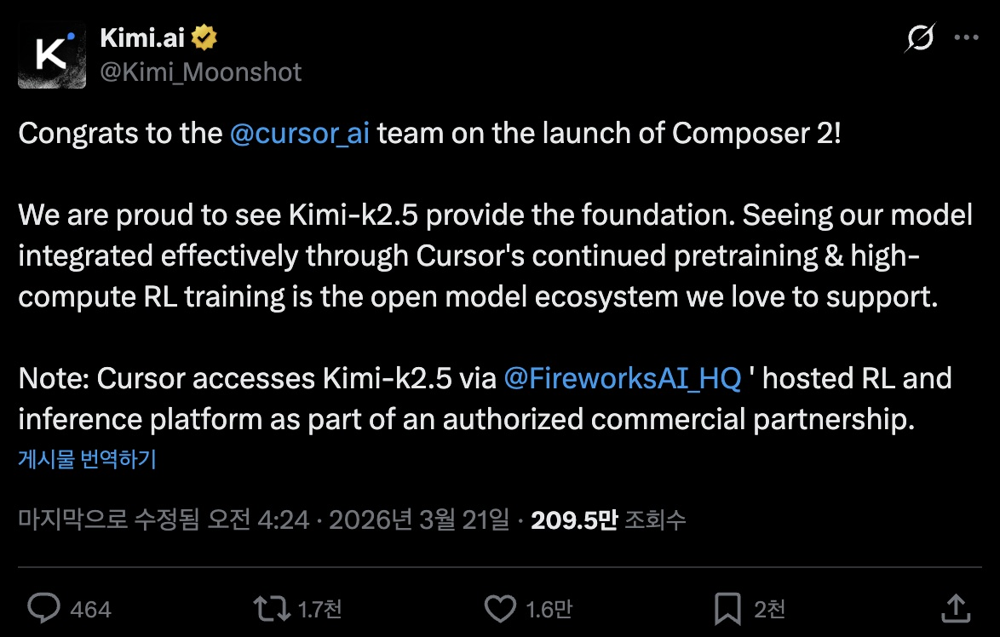
범용 모델 중심의 AI 시장에서 Cursor는 코딩 전용 모델 Composer 2를 출시했다. Moonshot AI의 오픈소스 Kimi-k2.5를 기반으로 코딩 데이터에 집중한 지속적 사전 학습과 강화 학습을 적용해 복잡한 다단계 코딩 작업을 자율 처리하는 수준을 달성했으며, 출처 표기 논란은 양사 간 상업적 파트너십 확인으로 일단락되었다. 이 사례는 검증된 오픈소스 기반 파인튜닝 방식이 특화 AI 개발의 주류 전략임을 보여 준다.
핵심 포인트: 핵심 성과: 입력 100만 토큰당 0.5달러의 파격적인 가격으로 코딩 특화 최고 수준의 지능을 구현했으며, 처음부터 훈련하는 방식 대신 Kimi-k2.5 오픈소스 기반 파인튜닝과 강화 학습으로 비용 효율을 극대화했다.
🔗 threads.com/@choi.openai/post/DWJG_-Ej_3C…
기타 (Others)
구글 스티치 vs 클로드: AI·인간 UI 결과물 비교
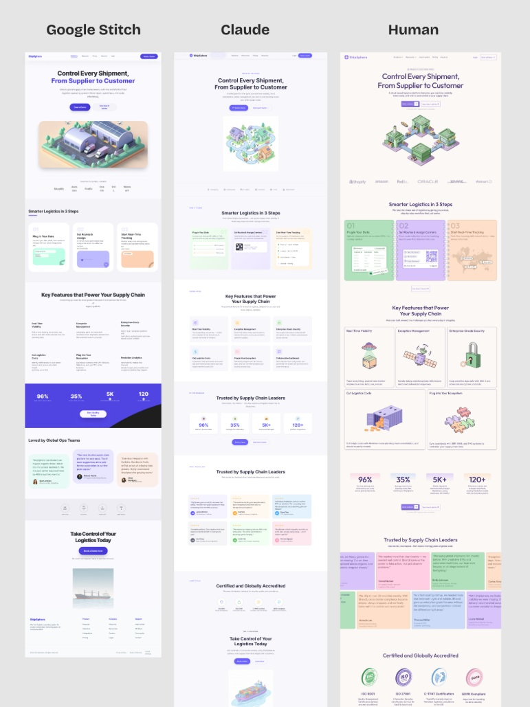
UI 디자인 결과물 생성에 숙련된 인간이 약 72시간을 소요하는 반면, Google Stitch와 Claude는 동일한 작업을 5분 만에 완료한다. 온라인 커뮤니티는 세 결과물을 나란히 비교하며 AI 도구의 실질적 품질을 평가했으나, 반응은 엇갈려 인간 결과물 우위론부터 세 결과물 모두 템플릿 수준이라는 비판까지 다양한 의견이 제기되었다.
핵심 포인트: 핵심 성과: Google Stitch와 Claude 모두 UI 결과물을 5분 만에 생성하며 인간의 72시간 대비 약 864배 빠른 속도를 보였으나, 커뮤니티 반응에서는 품질 면에서 세 결과물 모두 템플릿 수준이라는 비판적 평가가 다수를 이뤘다.
🔗 threads.com/@ai_margin_/post/DWG289piv0B?…
기타 (Others)
반디네이머 — 맥북 한글 파일명 깨짐 방지 무료 유틸리티
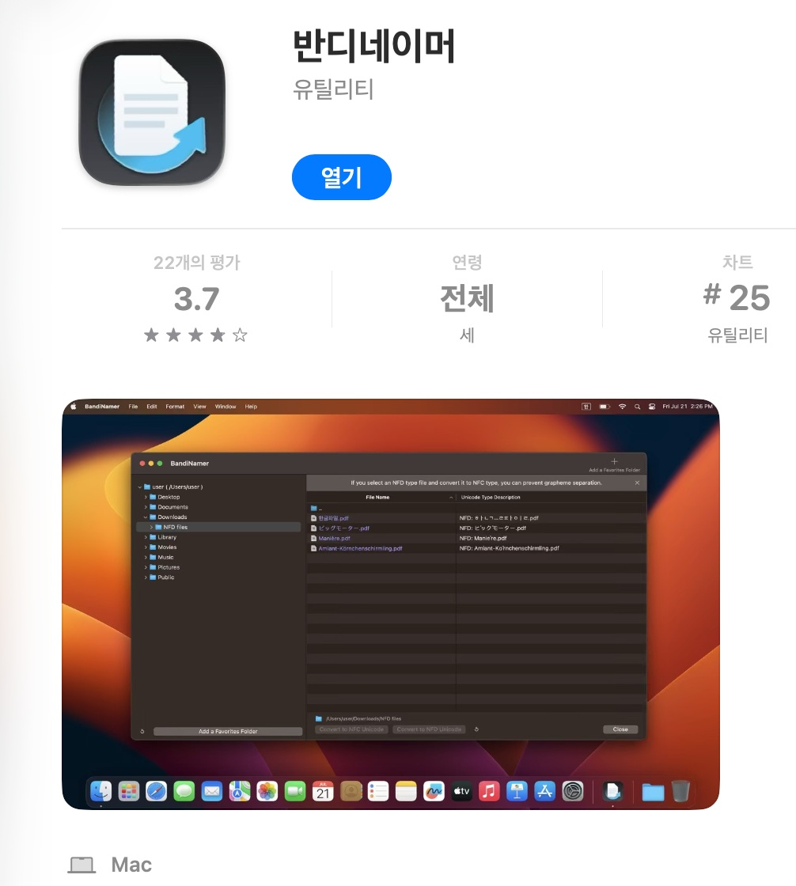
맥북에서 한글 파일명을 가진 파일을 외부로 전송할 경우 파일명이 자모 분리 형태(ㅍㅏㅇㅣㄹㅁㅕㅇ)로 깨져 보이는 유니코드 정규화 문제가 발생한다. 반디네이머는 이 문제를 사전에 방지하는 무료 경량 유틸리티로, 파일 압축 도구 반디집으로 알려진 Bandisoft가 개발해 신뢰성 있는 해결책을 제공한다.
핵심 포인트: 핵심 성과: 맥OS 환경에서 한글 파일명 자모 분리 문제를 전용으로 처리하며, 무료 제공 및 소용량 설계로 즉시 도입 가능하고 반디집 제조사의 검증된 품질을 갖춘다.
🔗 threads.com/@boostpage.studio/post/DWDKmE…
기타 (Others)
Visa CLI — AI 에이전트용 터미널 결제 인터페이스
기존 결제 시스템은 사람의 직접 개입을 전제로 설계되어 AI 에이전트의 자율 결제 실행이 불가능했다. Visa는 터미널에서 직접 카드 결제를 처리하는 CLI 도구를 출시해 AI 에이전트가 사람 개입 없이 결제를 완료할 수 있는 환경을 구축했다. Stripe, Mastercard, Circle 등 주요 결제사들도 동일한 방향의 도구를 공개하며 AI 주도 자율 결제 생태계의 개막을 알렸다.
핵심 포인트: 핵심 성과: Visa CLI 출시로 터미널 기반 카드 결제가 가능해졌으며, Stripe·Mastercard·Circle 등 주요 4개 결제사가 동시에 AI 에이전트용 결제 도구를 공개하며 인간 개입 없는 자율 결제 인프라가 형성되었다.
🔗 threads.com/@ai_margin_/post/DWD6BZREbiB?…
기타 (Others)
Antigravity: 프롬프트로 풀스택 앱 자동 구성 에이전트
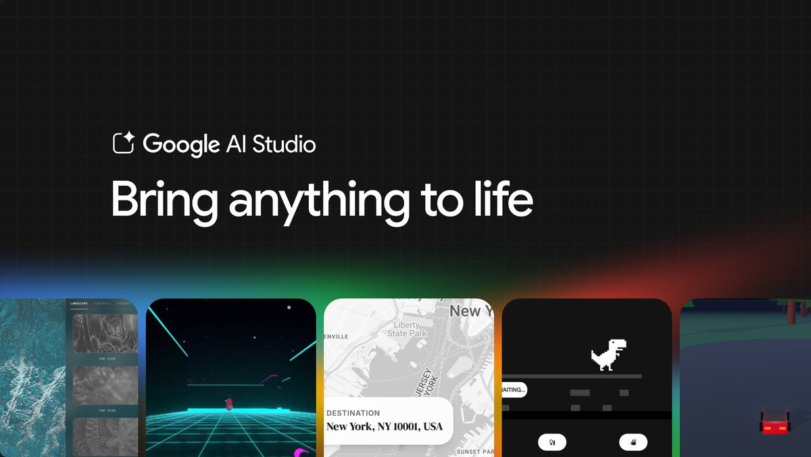
기존 vibe coding 도구들이 프로토타입 수준에 그쳤다면, 구글 AI Studio는 Antigravity 코딩 에이전트를 통해 실제 서비스 수준의 앱 개발을 지원한다. 사용자가 프롬프트를 입력하면 멀티플레이어 기능, 데이터베이스 연동, 로그인 시스템이 자동으로 구성되며, 비전공자도 접근 가능한 방식으로 풀스택 개발 환경을 제공한다.
핵심 포인트: 핵심 성과: Google AI Studio가 Antigravity 에이전트로 vibe coding을 프로토타입에서 프로덕션 앱 수준으로 격상하며, 멀티플레이어·DB·로그인 기능을 프롬프트 하나로 자동 구성한다.
🔗 threads.com/@choi.openai/post/DWEl6WVD47h…
기타 (Others)
MAI-Image-2: 마이크로소프트 자체 이미지 생성 모델
마이크로소프트의 Copilot과 Bing 이미지 생성은 오픈AI 기술에 전적으로 의존하는 구조로, 자체 AI 역량 확보가 장기 과제였다. 무스타파 술레이만이 이끄는 Microsoft AI 팀은 자체 개발 이미지 생성 모델 MAI-Image-2를 공개하며 이 의존성을 해소했다. 출시 직후 Arena 리더보드 3위 그룹에 진입해 최고 수준의 성능을 입증하며, 마이크로소프트의 AI 내재화 전략이 가시화됐다.
핵심 포인트: 핵심 성과: 공개 직후 Arena 리더보드 3위 그룹 진입으로 최상위 성능을 입증했으며, 자체 이미지 생성 역량 확보로 오픈AI 기술 의존에서 탈피하는 전환점을 마련했다.
🔗 microsoft.ai/news/introducing-MAI-Image-2/
기타 (Others)
Channels: 모바일 메신저로 Claude Code 제어
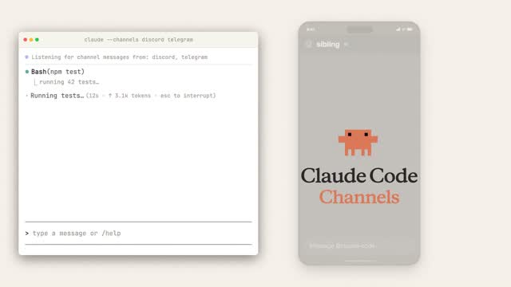
개발자가 데스크탑 환경에서만 코딩 세션을 관리해야 했던 제약을 해소하기 위해, 앤트로픽이 Claude Code에 Channels 기능을 추가했다. 텔레그램과 디스코드를 통해 스마트폰에서 코딩 에이전트에 직접 명령을 전달할 수 있으며, 언제 어디서든 원격으로 세션을 제어하고 작업 맥락을 유지할 수 있다.
핵심 포인트: 핵심 성과: 텔레그램·디스코드 우선 지원으로 스마트폰에서 Claude Code 세션을 원격 제어할 수 있으며, 데스크탑 없이도 코딩 에이전트에 자연어로 작업을 지시하는 이동형 개발 환경을 최초로 실현했다.
🔗 threads.com/@choi.openai/post/DWFdleSAFks…
기타 (Others)
Stitch: 텍스트·음성으로 AI가 완성하는 디자인 프로토타입
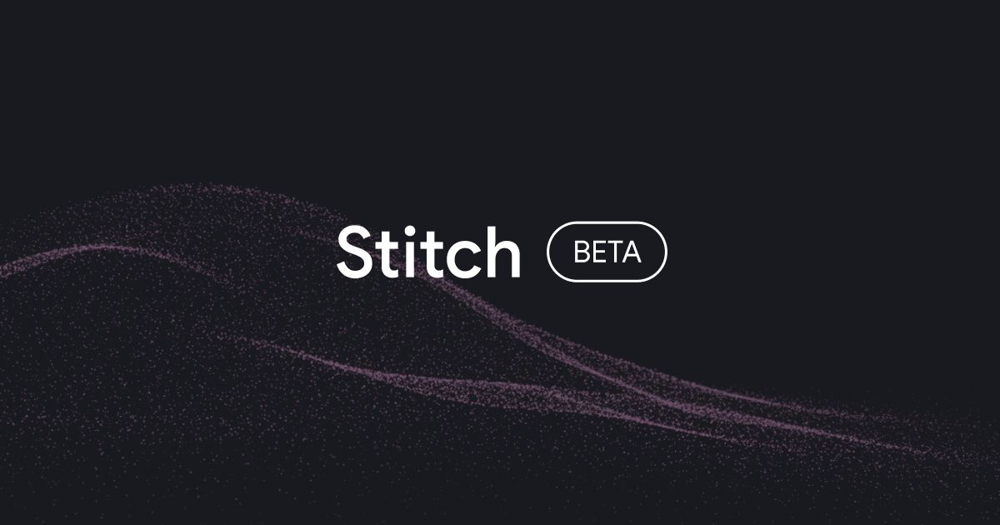
기존 앱 디자인 과정은 기획, 와이어프레임, 프로토타이핑 등 여러 단계를 거쳐야 했고 전문 도구와 디자이너의 협업이 필요했다. 구글 Stitch는 텍스트 설명만으로 AI가 UI 화면을 생성하고 인터랙티브 프로토타입으로 자동 연결하며, 음성 명령으로 레이아웃을 실시간 수정할 수 있어 기획부터 디자인까지 1인 작업을 가능하게 한다.
핵심 포인트: 핵심 성과: 텍스트 프롬프트 입력만으로 UI 화면 자동 생성 및 인터랙티브 프로토타입 연결, 음성 명령 기반 실시간 레이아웃 수정으로 기획·디자인·개발 1인 워크플로우 실현.
기타 (Others)